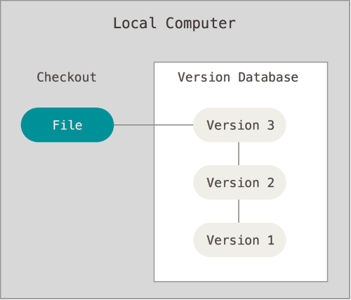
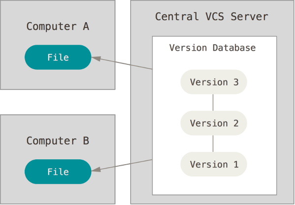
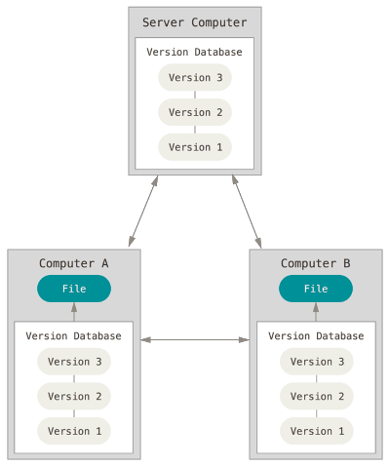
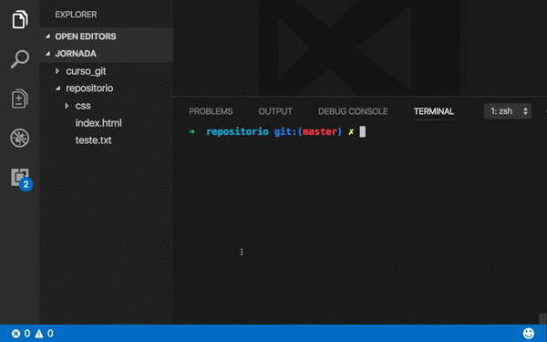
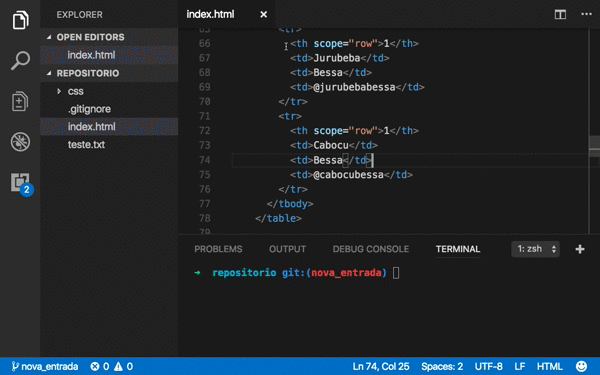

GIT
Pré-Requisito
O que é o GIT ?
O GIT é um Sistema de Controle de Versão
O que é sistemas de controle de versão ?
Sistema de Controle de Versão (VCS)
Sistema de Controle de Versão Centralizado (CVCS)
Sistema de Controle de Versão Distribuído (DVCS)
Tópico 1: Por um projeto sob versionamento
- Projeto Zip
- Salvar arquivo e descompactar dentro da pasta do PortableGit
Tópico 2: Criando Repositório Local
cd repositorio /* para entrar na pasta repositorio */
git init
Tópico 3: Commit Arquivo
- Entender as diferentes áreas de trabalho
- Entender os estados que um arquivo pode ter
- Selecionar arquivos para commit
- Ignorar arquivos para que eles não sejam commitados
- Commitar os arquivos
Áreas de Trabalho

Estados de um arquivo

Quais estados dos arquivos ?
git status
Adicionar Arquivos na Área de Preparação
git add index.html
git add css/starter-template.css
git status
Dica: .gitignore
- Crie mais um arquivo com um nome qualquer
- Teste o git status
- Cria um arquivo chamado .gitignore
touch .gitignore
Dica: .gitignore
Commitando Arquivo
git commit -m "Comentário"
git status
Dica: Adicionar todos os arquivos Untracked e Modified
git add -A
git add .
Dica: Commite sem Staging Area (Cuidado)
git commit -a -m "Comentário"
Tópico 4: Desfazer Alterações
- Cenário 1: Descartar Alteração no Diretório de Trabalho
- Cenário 2: Descartar Alteração na Área de Preparação
Cenário 1: Descartar Alteração no Diretório de Trabalho
Pré-Requisito
- Altere dados em um arquivo que já se encontra em controle de versão
Dica: diff
Para ver as alterações em todos os arquivos
git diff
Cenário 1: Descartar Alteração no Diretório de Trabalho
git checkout HEAD nome_do_arquivo
Cenário 2: Descartar Alteração na Área de Preparação
Pré-Requisito
- Altere dados em um arquivo que já se encontra em controle de versão
- Adiciona esse arquivo na Stagin Area
git add nome_do_arquivo
Dica: diff
Para ver as alterações na Staging Area
git diff --staged
Cenário 2: Descartar Alteração na Área de Preparação
git reset HEAD nome_do_arquivo
Tópico 5.1: Gerenciar Branches - Básico
- Cenário 1: Indentificar Branches
- Cenário 2: Criar um Novo Branches
- Cenário 3: Entrar no Novo Branche

Cenário 1: Identificar Branches Existentes
git branch
Cenário 2: Criar um Novo Branch
git branch nome_do_branch
Cenário 3: Entrar no Novo Branch
git checkout nome_do_branch
Tópico 5.2: Gerenciar Branches - Merge
- Cenário 1 Merge Simples entre Dois Branches
- Cenário 2 Merge com Conflito
Cenário 1: Merge Simples entre Dois Branches
Pré-Requisito
- Criar um branch com o nome nova_entrada
- Vá para esse branch nova_entrada
- Altere e Commit o arquivo index.html
- Volte ao branch master
Cenário 1: Merge Simples entre Dois Branches
git merge nova_entrada
Cenário 2 Merge com Conflito
Pré-Requisito
- Vá ao branch nova_entrada e Altere e Commit o arquivo index.html
- Faça o mesmo no branch master
- Tente mesclar nova_entrada com o branch master
Cenário 2 Merge com Conflito
Tópico 6: Repositório Origin
- Cenário 1: Clonar o Repositório
- Cenário 2: Enviar o Repositório Local para Outra Máquina
Cenário 1: Clonar Repostório
Pré-Requisito
- Saia do diretório atual
cd ..
Cenário 1: Clonar Repostório
git clone https://github.com/andrelimabessa/jornada_si_git.git
Cenário 2: Enviar o Repositório Local para Outra Máquina
Pré-Requisito
- Criar uma conta no GitHub
- Criar um novo repositório GitHub (Crie com um nome diferente de repositorio)
Cenário 2: Enviar o Repositório Local para Outra Máquina
git remote add origin https://github.com/_endereço_repositorio_.git
git push
- Observe no GitHub se o Push foi bem sucedido
Cenário 3: Buscar Atualizações do Repositório Remoto
Pré-Requisito 1
- Compartilhe o link do seu repositório com o colega do lado
- Adicione o colega como colaborador no GitHub
- Será enviado um email para que o colega confirmar que ele deseja participar
- Colega deve clonar o seu repositorio
Pré-Requisito 2
- Colega deve criar um branch com o nome dele
- Alterar o index.html, commitar e fazer um push
Cenário 3: Buscar Atualizações do Repositório Remoto
git pull